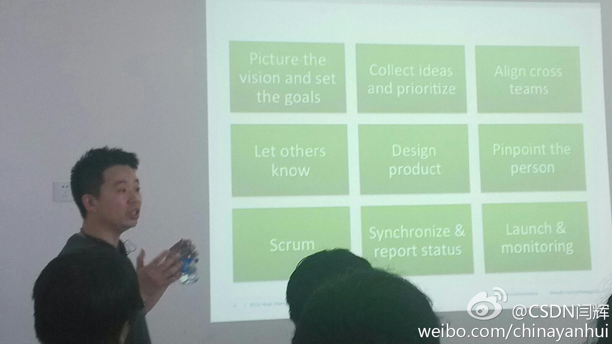

早上路上堵了两个多小时。想吐槽发微博也腾不出手来，倒是把三小时的“飞鱼秀”广播快听完了，头一次听这么长时间唉。

Ada李力
2013-03-18
Ada李力
2013-03-18
有个人把我加到了一个CIO微群里，然后又把我移出来了。
Ada李力
2013-03-18
社区领导人微群里有人负责很小众的社区，以前都没听说过，比如Hibuzz, Blendar.....
Ada李力
2013-03-18
屁股决定脑袋，这么说是因为你是小众代表。[呵呵]//@ZoomQuiet: #FLOSS#社区就是首先服务好小众,才可能大众的,但是根本上应该是服务好周边小众的,,,
@Ada李力:
社区领导人微群里有人负责很小众的社区，以前都没听说过，比如Hibuzz, Blendar.....
Ada李力
2013-03-18
社区领导人的聚会安排在了这个周五（3月22日），当时在考虑是时间是安排在周末还是工作日，纠结了会儿。但选择了工组日，是觉得不管是专职从事社区运营工作，或者作为一种兴趣爱好而社区领导人，能够一定程度上安排自己的时间是必要条件。


Ada李力
2013-03-18
公司为此给所有部门经理都发了本《打造Facebook》
@闫辉_Life加加:
《打造facebook》一书作者 王淮来csdn做分享 我在: 广顺北大街
广顺北大街
- 
Ada李力
2013-03-18
原文在哪里？@极客头条
@Marshal-Liu:
2012年3月18日，全球开源社区openSUSE项目宣布推出openSUSE 12.3，也成为第一个正式抛弃MySQL的Linux发行版！